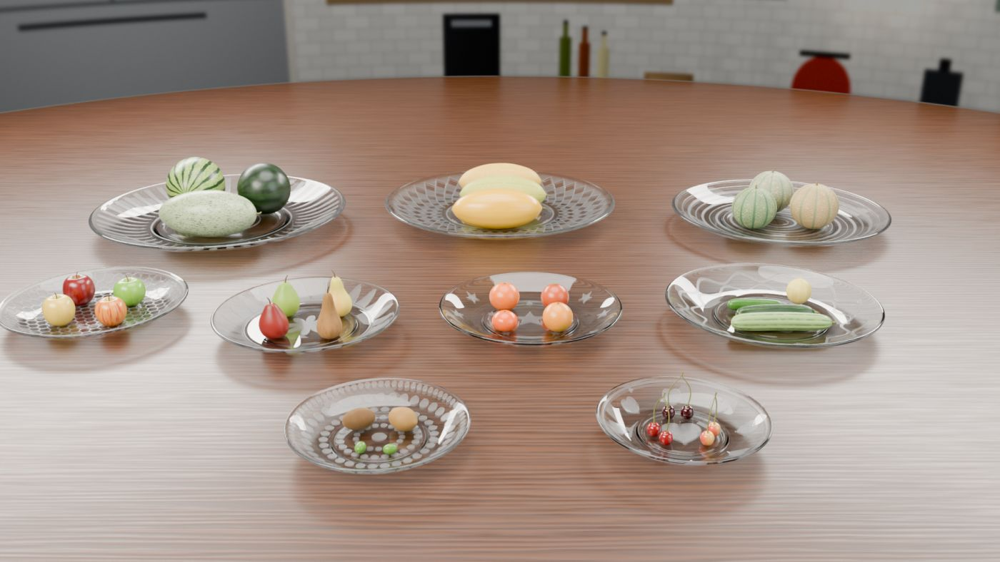
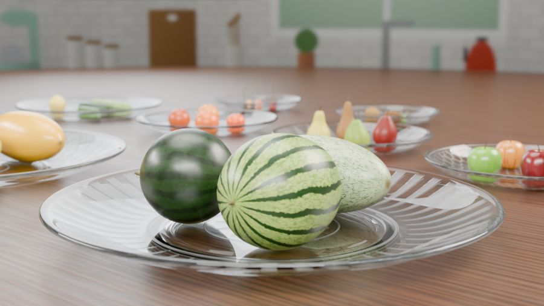
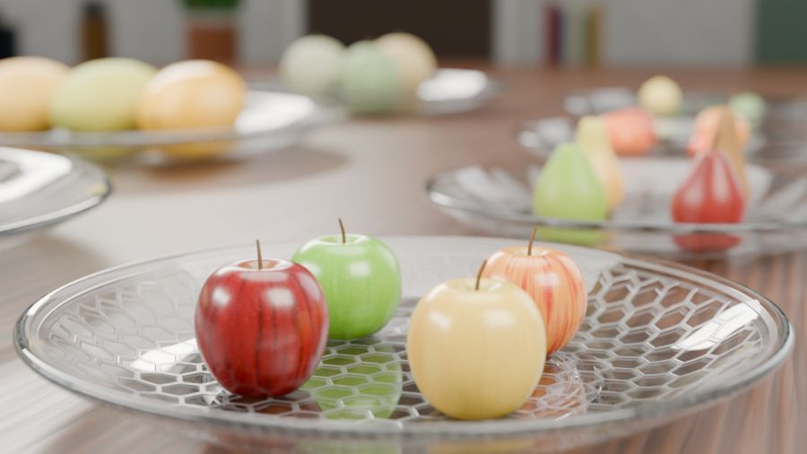
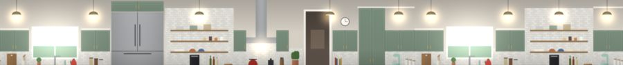
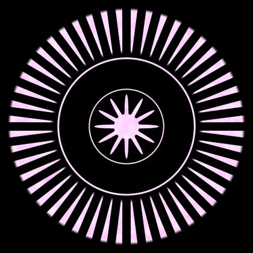
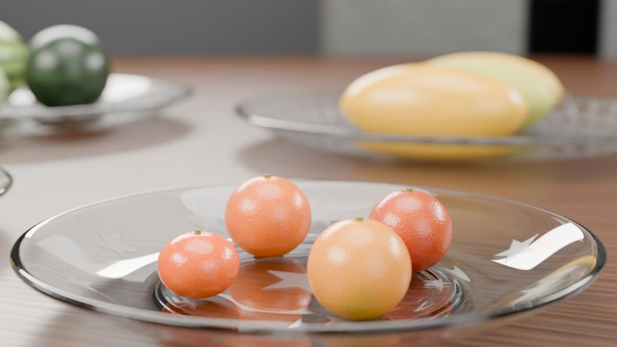
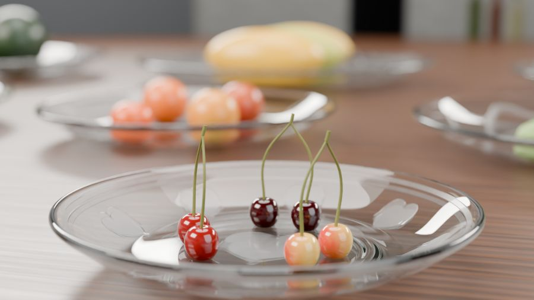
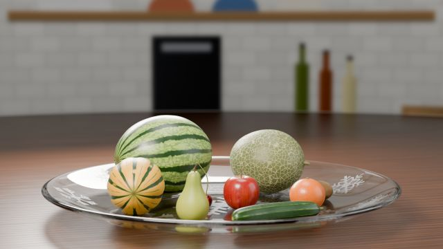
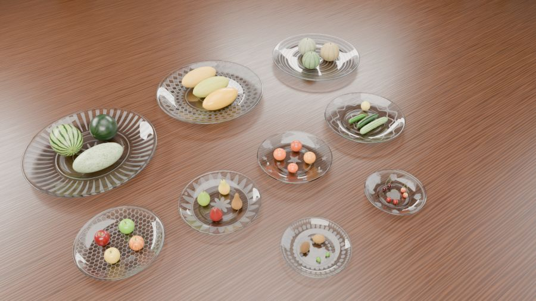

A table of fruit on glass plates
Nine etched glass plates on a round walnut table in a kitchen, each holding several varieties of one fruit: watermelons, Persian melons, zebra melons, apples, pears, oranges, cucumbers, kiwis and cherries.



This is the biggest project, but it repeats a few techniques many times: one plate method used nine times, and one fruit method used about thirty times. Learn each one well on the first object, and the rest is duplicating and adjusting.
Step 1 · New file, table and kitchen
- New General file; delete the cube, the camera and the light. Save as projects/03-fruits/fruits.blend. Copy the fruit texture folders into 03-fruits/assets/textures/.
- Table: Add a Cylinder, Vertices 192, Radius 3.586, Depth 0.05, Location Z −0.025, so the tabletop is at Z = 0. Name it
Kitchen_Table. Add a Bevel: Amount 0.006, Segments 3, Limit Method Angle. - Kitchen wall: Add a Cylinder, Vertices 256, Radius 3.606, Depth 2.46, Cap Fill Nothing. Location Z 1.17 (so it spans −0.06 to 2.4 m), Rotation Z −154.8°. Name it
Kitchen_Backdrop. - Wall material: delete the Principled, add Emission (Strength 1). UV Map node → Mapping (Location Y −0.025, Scale Y 1.025) → Image Texture kitchen_background.png → Emission Color.
- Put both in a
Kitchencollection. - World: Background Color (0.692, 0.604, 0.507), Strength 0.25. A faint warm ambient light, like a sunny kitchen.

The walnut table material
This one is fully procedural: no image, just maths. It's a good exercise in building up a look in layers.
Nodes: Table_Walnut
- Texture Coordinate › Object → Mapping (Scale 0.35, 6, 1). Stretching coordinates makes every texture after this long and thin, like grain.
- → Wave Texture: Bands, Direction Y, Scale 3, Distortion 9, Detail 4, Detail Scale 1.5 → Map Range (From 0.2–1, To 0–1) → Factor of Mix (Color): A (0.033, 0.012, 0.005), B (0.133, 0.047, 0.015). Light and dark grain.
- Mapping → Noise Texture (Scale 18, Detail 6) → Factor of a second Mix: A = first mix, B (0.073, 0.025, 0.009). Random patches of a middle brown.
- Plank seams: Texture Coordinate Object → Separate XYZ › Y → Math › Ping-Pong (Scale 0.11) → Map Range (From 0–0.0018, To 1–0) → Factor of a third Mix: A = second mix, B (0.007, 0.004, 0.002) → Base Color. A thin dark line every 22 cm.
- Noise → Map Range (From 0.3–0.7, To 0.32–0.5) → Roughness. The finish is a little uneven.
- Grain Map Range − seam Map Range (Math › Subtract) → Bump (Strength 0.12, Distance 0.002) → Normal. Coat Weight 0.15, Coat Roughness 0.25.
Step 2 · Spin a glass plate from a profile
A plate is round, so you only need to draw half of its cross-section, a line from the centre out to the rim, and let the Screw modifier spin it 360°. It's the same idea as turning a pot on a wheel.
The 26 points of the watermelon plate's profile, in order (radius X, height Z, in millimetres):
| # | X | Z | # | X | Z | # | X | Z |
|---|---|---|---|---|---|---|---|---|
| 1 | 0 | 14.2 | 10 | 413.8 | 68.1 | 19 | 240.6 | 6.1 |
| 2 | 124.4 | 14.2 | 11 | 420.0 | 66.1 | 20 | 221.9 | 4.1 |
| 3 | 248.9 | 14.2 | 12 | 421.0 | 61.0 | 21 | 215.7 | 0 |
| 4 | 277.9 | 15.8 | 13 | 414.8 | 55.9 | 22 | 197.0 | 0 |
| 5 | 305.9 | 21.4 | 14 | 394.1 | 46.8 | 23 | 190.8 | 4.1 |
| 6 | 333.9 | 30.5 | 15 | 365.0 | 33.6 | 24 | 155.6 | 6.1 |
| 7 | 360.9 | 42.7 | 16 | 333.9 | 21.4 | 25 | 72.6 | 6.1 |
| 8 | 385.8 | 55.9 | 17 | 302.8 | 12.2 | 26 | 0 | 6.1 |
| 9 | 404.4 | 65.1 | 18 | 271.7 | 7.6 |
- Make a single point. Add a Plane, Tab, A, M › At Center. You have one vertex. In the Sidebar › Item › Vertex, set X 0, Y 0, Z 0.0142.
- Press Numpad 1 for front view, so you're drawing on the X–Z plane.
- Add the rest. For each next point: E, then right-click (this creates a connected copy right on top), then type its X and Z in the Sidebar in metres (point 2 is X 0.1244, Z 0.0142). Repeat to point 26. Quicker but less exact: Ctrl+right-click to place each point where you click, following the diagram.
- Tab out and name it
Plate_01_Watermelons. It's just a line; that's correct. - Modifiers › Screw: Axis Z, Angle 360°, Screw 0, Iterations 1, Steps Viewport 96, Render 128, Merge on (distance 0.0004). A full plate appears.
- Add Subdivision Surface (Viewport 1, Render 2), then Weighted Normal. Right-click › Shade Smooth.
- Location (−0.95, 0.62, 0).
The other eight plates
Duplicate the plate (Shift+D), then type the new size into Dimensions, apply scale, and move it. Smaller plates are relatively deeper, so set X, Y and Z separately:
| Plate | Diameter × height (m) | Centre (X, Y) | Decal image | Mapping scale |
|---|---|---|---|---|
| 01 Watermelons | 0.84 × 0.067 | (−0.95, 0.62) | plate_watermelon_sunburst | 1.167 |
| 02 Persian Melons | 0.80 × 0.066 | (0, 0.72) | plate_persian_melon_diamonds | 1.225 |
| 03 Zebra Melons | 0.72 × 0.063 | (0.95, 0.62) | plate_zebra_melon_rings | 1.362 |
| 04 Apples | 0.48 × 0.054 | (−1.08, −0.16) | plate_apple_honeycomb | 2.042 |
| 05 Pears | 0.48 × 0.054 | (−0.5, −0.24) | plate_pear_flower | 2.042 |
| 06 Oranges | 0.48 × 0.054 | (0.08, −0.2) | plate_orange_stars | 2.042 |
| 07 Cucumbers | 0.56 × 0.057 | (0.72, −0.18) | plate_cucumber_waves | 1.751 |
| 08 Kiwis | 0.38 × 0.050 | (−0.25, −0.8) | plate_kiwi_dots | 2.58 |
| 09 Cherries | 0.36 × 0.050 | (0.38, −0.78) | plate_cherry_hearts | 2.723 |
Put each plate in its own collection (Plate 01 Watermelons … Plate 09 Cherries) inside Fruit Plates. Its fruit will go in the same collection.
Step 3 · Etched glass
Each plate is clear glass with a frosted, slightly engraved pattern on top. The pattern comes from a mask image: pink lines on black, seen from above.

Nodes: Crystal_01_Watermelons
- Two Principled BSDFs. Clear: Base Color (0.933, 0.977, 1.0), Roughness 0, IOR 1.52, Transmission Weight 1. Frosted: Base Color (0.848, 0.89, 0.933), Roughness 0.32, IOR 1.52, Transmission 0.9.
- Both → Mix Shader (clear in the top slot, frosted below) → Material Output.
- Texture Coordinate › Object → Mapping (Location 0.5, 0.5, 0, Scale = the plate's value from the table, same for X and Y) → Image Texture (mask, Non-Color) → Separate Color.
- Geometry › Normal → Separate XYZ › Z → Map Range (From 0.25–0.6, To 0–1). This is 1 on surfaces facing up and 0 on the sides and underneath.
- Green × facing-up (Math Multiply) × 0.75 (Math Multiply) → Mix Shader Factor. Frosted where the pattern is, on top surfaces only.
- Red × facing-up → Math Subtract (value − 1, so engraved areas sink) → Bump Height (Strength 0.45, Distance 0.0008) → the Normal of both Principled nodes.
Make the material once, duplicate it for each plate, and swap the image and Mapping scale. Glass needs at least 16 light bounces (set in Step 9). It is many surfaces deep, and with too few bounces it renders black.
Step 4 · Turn a sphere into fruit
Every fruit is a UV Sphere with few segments, reshaped by hand, then smoothed and roughened with modifiers. Here's the method on one Gala apple:
- Add a UV Sphere: Segments 16, Rings 10, Radius 0.04. Right-click › Shade Smooth.
- Tab, vertex select. Click the very top point. Turn on proportional editing (O), press G Z and move down about −0.011, scrolling to make the influence circle small. The top caves in: the stem dimple. Do the same to the bottom point, upward, about 0.009.
- Turn proportional editing off (O). Scale the whole apple down a little in Z (A, S Z
0.92) so it's slightly wider than tall. Tab out. - Modifiers: Subdivision Surface (Viewport 1, Render 2), then Displace with a new Clouds texture: Size 0.03, Depth 2; Strength 0.0012, Coordinates Local. That's a barely visible lumpiness, which is what makes it look like fruit and not plastic.
- Rotate it a little around Z (each apple in the file is turned differently: 20°, 140°, 250°, 300°) so the four don't look stamped out.
- Lower it until it rests on the plate's surface. For the small plates the fruit origins sit at about Z 0.008.
Every fruit at a glance
The same method with different settings. Sizes are the final dimensions (length × width × height) in centimetres; "lying" fruit are rotated 90° so their long axis is horizontal.
| Fruit | Segments × Rings | Size (cm) | Shape edit | Displace (strength · cloud size) |
|---|---|---|---|---|
| Watermelon Crimson Sweet | 24 × 12 | 23 × 19.5 × 19.6 | stretch one axis, lying | 0.003 · 0.06 |
| Watermelon Sugar Baby | 24 × 12 | 18.3 × 18 × 18 | plain sphere | 0.003 · 0.06 |
| Watermelon Charleston Gray | 24 × 12 | 31.8 × 15.2 × 15.2 | long oval, lying | 0.003 · 0.06 |
| Persian melons (3) | 40 × 16 | 30.6 × 13.4 × 13.3 | long, pointed ends, lying | 0.002 · 0.06 |
| Zebra melons (3) | 40 × 16 | ≈ 15 × 15 × 14.5 | upright, dimpled poles | 0.002 · 0.05 |
| Apples (4) | 16 × 10 | ≈ 8 × 8 × 7–8 | dimple top and bottom | 0.0012 · 0.03 |
| Pears Anjou (2) | 16 × 10 | 7.4 × 7.4 × 9.3 | narrow the top rings: neck | 0.0012 · 0.03 |
| Pears Bartlett, Bosc | 16 × 11 | 7 × 7 × 10.7 · 6.4 × 6.4 × 12.3 | longer neck | 0.0012 · 0.03 |
| Oranges (4) | 20 × 12 | 6.6–8.2 wide | slightly flattened; mandarin flattest | 0.001 · 0.02 |
| Cucumbers (3) | 20 × 11 | 14.9–25.9 × 3.6–4.9 | long and thin, lying | 0.0012 · 0.03 |
| Lemon cucumber | 20 × 12 | 6.7 × 6.6 × 7.5 | round | 0.001 · 0.02 |
| Kiwis green, gold | 16 × 10 | 7 × 5 × 4.5 | egg shape, lying | 0.0015 · 0.02 |
| Kiwi berries (2) | 16 × 10 | 3 × 2.2 × 2.2 | small egg | 0.0007 · 0.02 |
| Cherries (6) | 12 × 6 | ≈ 3 × 3 × 2.9 | dimple on top, object scale 1.25 | none |
Place each fruit on its plate (the watermelons around (−0.95, 0.62) and so on), each fruit's Z set so it touches the plate. Arrange them as if someone set them down by hand: different turns, not a perfect grid.
Step 5 · Stems from curves
- Add › Curve › Bezier. Tab. Select one end and press E to add a third point. Shape it into a short upward hook: for the Gala apple the points are about 6.3, 7.6 and 8.7 cm above the apple's base, leaning slightly sideways.
- Curve Data tab › Geometry › Bevel › Depth 0.0016 (a 3.2 mm thick stem), Resolution 3. Tick Fill Caps.
- Move it onto the apple's dimple. Select the stem, then Shift+click the apple, Ctrl+P › Object (Keep Transform). Now the stem moves with its fruit.
| Stem | Bevel depth | Material |
|---|---|---|
| Apple, pear | 0.0016–0.0018 | Stem_Woody |
| Watermelon, Persian, zebra melon | 0.0028–0.004 | Stem_Dry_Melon |
| Orange "button" (2 points) | 0.0029–0.0036 | Stem_Green |
| Cucumber | 0.0028–0.0039 | Stem_Green |
| Cherry pair (one curve, 3 splines) | 0.0012 | Stem_Green |
Cherry pairs. Two cherries share one stem object. Draw the first stem from one cherry up to a joint (about 10.8 cm above the table). While still in Edit Mode, Add › Bezier again: it becomes a second spline inside the same object. Draw it from the second cherry to the same joint. Add a third short spline above the joint as the tip.
Nodes: stem materials (all three share this setup)
- Texture Coordinate › Object → Noise (Scale 400, Detail 6) → Factor of Mix (Color) → Base Color; same Noise → Bump (Strength 0.3, Distance 0.0004) → Normal. Roughness 0.7.
- Stem_Woody: A (0.073, 0.033, 0.01), B (0.171, 0.089, 0.027). Stem_Dry_Melon: A (0.263, 0.214, 0.073), B (0.1, 0.089, 0.027). Stem_Green: A (0.107, 0.147, 0.022), B (0.233, 0.214, 0.047).
Step 6 · Fruit skins
The skins come in three kinds. Learn one of each and copy-adjust the rest.
Kind A: image skin (apples, pears, cucumbers, watermelons)
Nodes: Apple_Gala_Skin
- UV Map → Image Texture apple_gala_color.png → Base Color
- Texture Coordinate › Object → Noise (Scale 500, Detail 8, Roughness 0.6) → Bump (Strength 0.04, Distance 0.0006) → Normal
- Same Noise → Map Range (From 0.3–0.7, To 0.24–0.375) → Roughness: the shine varies across the skin
- Subsurface Weight 0.06, Radius (1, 0.2, 0.1), Scale 0.004; Coat Weight 0.35, Coat Roughness 0.15 (the waxy shine of an apple)
Others use the same nodes with their own image and numbers. Pear Bosc: noise scale 600, bump 0.1, roughness 0.576–0.9 (a matte, russet skin), coat 0.1. Watermelons: noise scale 60, bump 0.12, roughness 0.30–0.475, subsurface 0.02, coat 0.25. Cucumbers add a second bump from a Voronoi (Scale 70) through Map Range (From 0–0.22, To 1–0) at Strength 0.1, for little bumps on the skin.
Kind B: fully procedural (oranges, kiwis, cherries)
Orange_Navel_Peel: pores
- Object coords → Noise (Scale 25, Detail 4) → Mix factor: A (0.848, 0.119, 0.002), B (0.933, 0.214, 0.004) → Base Color
- Object coords → Voronoi (Smooth F1, Scale 420) › Distance → Map Range (From 0–0.5, To 0–1) → Bump (Strength 0.35, Distance 0.0006): the dimpled pores
- Fine noise (Scale 900) → second Bump (Strength 0.08) chained in; pores → Map Range (To 0.44–0.27) → Roughness, so pore centres are duller
- Subsurface 0.05 (radius 1, 0.2, 0.1, scale 0.004), Coat 0.2
Kiwi_Green_Skin: fuzz
- Two Noise textures on Object coords (Scale 60 and 1500). The coarse one mixes two browns (0.089, 0.04, 0.012) / (0.179, 0.089, 0.027); the fine one, through Map Range (0.55–0.75), adds dark speckles (0.04, 0.02, 0.006) and drives a Bump (Strength 0.45).
- Roughness 0.85, Specular 0.3, Sheen Weight 0.6 tinted (0.448, 0.296, 0.147). Sheen is what makes it fuzzy.
Cherry_Bing_Skin: gloss
- Noise (Scale 180) mixes (0.051, 0.001, 0.002) and (0.017, 0, 0.002); tiny bump 0.05
- Roughness 0.14, Coat 0.6 at roughness 0.05, Subsurface 0.15: a deep, wet-looking red
Kind C: image plus procedural detail (Persian and zebra melons)
Persian_Melon_Golden_Rind: netting on top of the image
- UV → rind image → Mix A
- Object coords → Noise (Scale 30) › Color → Vector Math Scale 0.002 → Vector Math Add with Object coords → Voronoi (Distance to Edge, Scale 230). The noise wobbles the cells so the net isn't too regular.
- Voronoi Distance → Map Range (From 0–0.07, To 1–0) gives thin net lines → Mix Factor, B = tan net colour (0.911, 0.787, 0.342) → Base Color; also → Bump (Strength 0.5) and → Map Range (To 0.5–0.85) → Roughness
Zebra melon stripes
UV › X × 10 → Math Fraction → min(f, 1 − f) → Map Range (From 0.0605–0.11) makes ten soft stripes around the melon, mixed in dark green (0.196, 0.296, 0.196), plus the same netting trick (Voronoi Distance to Edge, Scale 150) in (0.711, 0.604, 0.367), with a strong bump (0.8).


Step 7 · Studio lights for the table
The same four-light idea as the benches, scaled to the table. Put them in a Plate Lights collection.
| Light | Shape · size | Power | Color | Location | Rotation (°) |
|---|---|---|---|---|---|
| Key_Softbox | Rectangle 2.4 × 1.4 | 700 W | (1.0, 0.93, 0.84) | (−2.0, −2.3, 2.3) | (53.6, 0, −41.0) |
| Fill_Panel | Square 2.4 | 220 W | (0.9, 0.95, 1.0) | (2.6, −1.7, 1.4) | (66.5, 0, 56.8) |
| Rim_Strip_Left | Rectangle 2.4 × 0.6 | 450 W | (1.0, 0.97, 0.92) | (−2.2, 2.4, 1.6) | (64.5, 0, −137.5) |
| Rim_Strip_Right | Rectangle 2.4 × 0.6 | 400 W | (1.0, 0.97, 0.92) | (2.3, 2.3, 1.7) | (63.1, 0, 135.0) |
| Top_Disk | Disk 2.4 | 350 W | (1.0, 0.98, 0.95) | (0, 0.1, 2.7) | (2.2, 0, −180) |
Step 8 · Twelve cameras
Make an empty (Plain Axes) for each camera's focus point in a Camera Focus Targets collection, then the cameras in Render Cameras. All cameras: Depth of Field on, Clip Start 0.02, Clip End 30.
| Camera | Location | Rotation (°) | Lens | F-stop | Focus empty at |
|---|---|---|---|---|---|
| Cam_01_Overview_Front | (0, −2.55, 1.05) | (68.4, 0, 0) | 35 | 8 | (0, −0.2, 0.05) |
| Cam_02_Overview_High | (−1.25, −1.75, 2.05) | (46.2, 0, −35.8) | 30 | 8 | (0, 0, 0.05) |
| Cam_03_Overview_Low_Side | (2.45, −1.25, 0.4) | (84.2, 0, 61.7) | 38 | 5.6 | (0.72, −0.18, 0.05) |
| Cam_04_Watermelons | (−1.962, 1.749, 0.41) | (80.3, 0, −138.1) | 55 | 4 | (−0.95, 0.62, 0.09) |
| Cam_05_Persian_Melons | (0, 2.19, 0.399) | (80.3, 0, 180) | 55 | 4 | (0, 0.72, 0.088) |
| Cam_06_Zebra_Melons | (1.87, 1.646, 0.378) | (80.2, 0, 138.1) | 55 | 4 | (0.95, 0.62, 0.083) |
| Cam_07_Apples | (−1.812, −0.404, 0.241) | (79.9, 0, −71.6) | 55 | 3.2 | (−1.08, −0.16, 0.069) |
| Cam_08_Pears | (−1.271, −0.249, 0.241) | (79.9, 0, −89.4) | 55 | 3.2 | (−0.5, −0.24, 0.069) |
| Cam_09_Oranges | (0.366, −0.916, 0.241) | (79.9, 0, 21.8) | 55 | 3.2 | (0.08, −0.2, 0.069) |
| Cam_10_Cucumbers | (1.413, −0.648, 0.257) | (80.0, 0, 56.0) | 55 | 3.2 | (0.72, −0.18, 0.074) |
| Cam_11_Kiwis | (−0.278, −1.49, 0.22) | (79.7, 0, −2.4) | 55 | 3.2 | (−0.25, −0.8, 0.063) |
| Cam_12_Cherries | (0.566, −1.429, 0.216) | (79.7, 0, 16.0) | 55 | 3.2 | (0.38, −0.78, 0.062) |
Step 9 · Render
- Render tab: Cycles, GPU, Noise Threshold 0.015, Max Samples 192, Denoise on, Max Bounces Total 16.
- Color Management: AgX, Punchy, Exposure −0.4. The glass and coats are bright, so this scene needs the darkest exposure of the three.
- Render each of the 12 cameras (Ctrl+Numpad 0, F12) and Save As into 03-fruits/renders/ with the camera's name.
Like the benches, this scene started simpler. The first version had every fruit on a single snowflake-etched plate. Splitting it into nine plates, each with its own pattern and several varieties per fruit, came in the "added new textures and fruits" commit.


Check your result
- The plates are clear, with frosted patterns only on top, and their rims catch bright edge lines.
- No fruit floats above or sinks into its plate.
- Apples have dimples and stems, pears have necks, cherries hang in pairs.
- Oranges show pores, kiwis look fuzzy, cherries look glossy.
- The kitchen is recognisable but soft, and the table grain runs in one direction with plank seams.